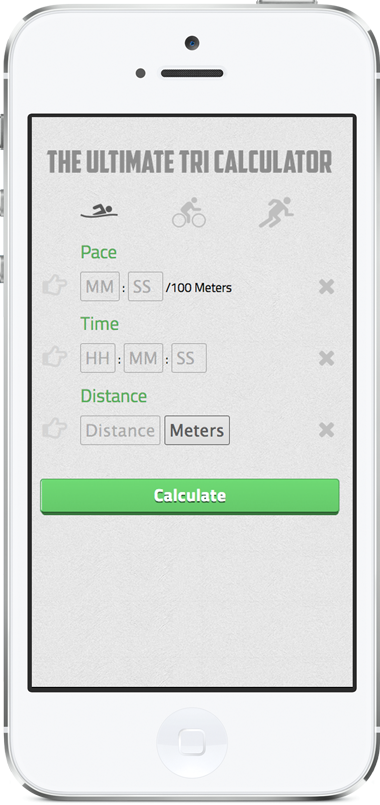

The Ultimate Triathlon Pace Calculator
Responsive Web App

The Ultimate Triathlon Pace calculator gives you everything you need to calculate pace, time, or distance.
Given two known values, you can easily find out how long it would take to bike 112 miles, how far you could swim in 30 minutes, or how fast you ran your last 10k. Try it out!

The app uses visual cues to indicate what event you are calculating (swim, bike or run) and what values need to be filled. After filling out two of the three values, the third field gets disabled since it will be calculated.
This was mostly an excercise in javascript, but I also took the time to learn about creating and using icon fonts.